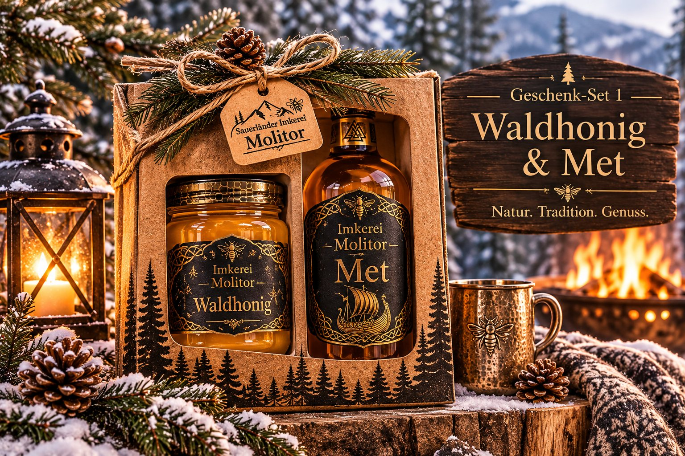
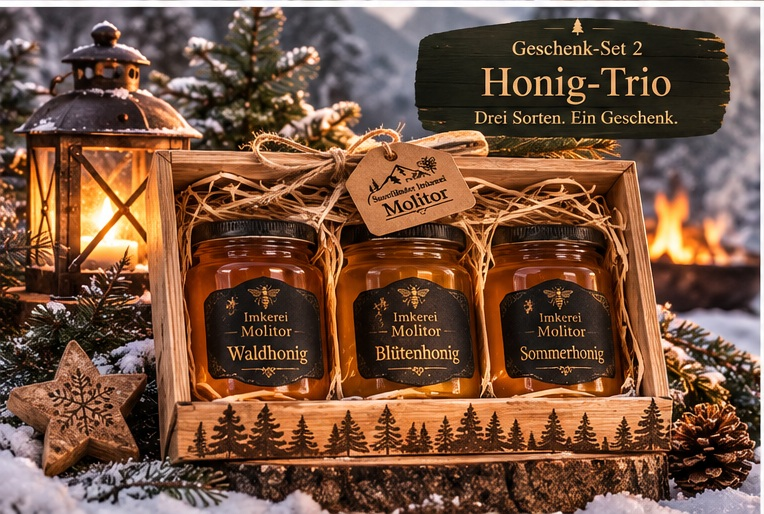
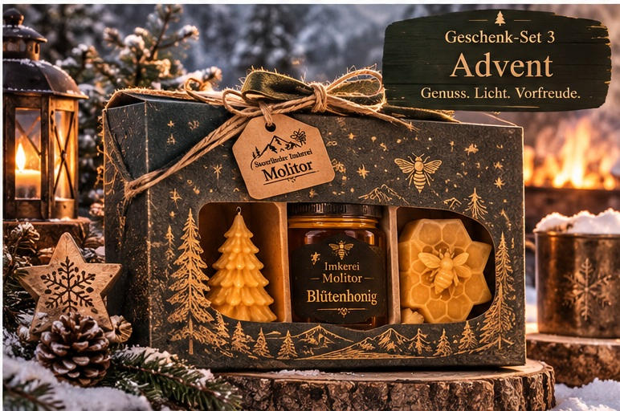

Set „Waldhonig & Met“
Für Genießer: 500 g Waldhonig und eine Flasche Met (750 ml, 11 % vol) aus derselben Imkerei.
Enthält Alkohol, Abgabe ab 18 Jahren
24,90 €Jedes Jahr dieselbe Frage: Was schenke ich Menschen, die eigentlich schon alles haben? Unsere Antwort kommt aus dem Sauerländer Wald – ein Honig-Geschenk vom Imker ist persönlich, regional und schmeckt nach dem Ort, an dem es entstanden ist.
Bestellschluss für Weihnachten: 21.12.2026

Für Genießer: 500 g Waldhonig und eine Flasche Met (750 ml, 11 % vol) aus derselben Imkerei.
Enthält Alkohol, Abgabe ab 18 Jahren
24,90 €
Zum Probieren: je 500 g Waldhonig, Heidehonig und Blütenhonig – von mild bis kräftig.
Ohne Alkohol
29,90 €
Für gemütliche Abende: 2 Bienenwachskerzen (je 200 g) und 500 g Blütenhonig.
Ohne Alkohol
26,90 €
Für große Bergliebhaber: Zimt Met, Bratäpfel Met und Vikinger Blut, je 750 ml, 11,5 % vol.
Enthält Alkohol, Abgabe ab 18 Jahren
28,90 €Ein Glas Honig vom Imker hat eine Geschichte: Es kommt von Bienen, die mitten im Wald leben, wurde von Hand geerntet und abgefüllt und trägt den Namen des Menschen, der sich das ganze Jahr um die Bienenvölker kümmert. Es passt zur Oma, die morgens gern ein Honigbrot isst, zum Kollegen, der regionale Produkte schätzt, und zu Freunden, die man mit etwas Echtem überraschen möchte.
Kein Alkohol unter 18 Jahren. Met und Geschenksets mit Met verkaufen wir nur an Erwachsene ab 18 Jahren – im Hofladen und im E-Shop. Bei der Lieferung oder Abholung kann das Alter geprüft werden.
Met gehört zu den ältesten Getränken überhaupt. Wir machen unseren Honigwein aus Honig unserer eigenen Bienen. Mehr auf der Seite Met. Met enthält Alkohol und wird nur ab 18 Jahren abgegeben.
Unsere handgezogenen Bienenwachskerzen aus dem Wachs unserer Bienen duften dezent nach Honig – für den Adventskranz, den Weihnachtstisch oder als kleines Geschenk.
Hinter jedem Glas steht Imker Molitor. Wer ein Honig-Geschenk von uns verschenkt, verschenkt auch ein Stück Sauerland. Mehr über uns.
Bestellschluss für Weihnachten ist der 21.12.2026.
Ja, im E-Shop können Sie eine andere Lieferadresse und einen Grußtext angeben. Ab 39 € ist die Lieferung gratis.
Das Mindesthaltbarkeitsdatum steht auf jedem Glas. Am besten lagern Sie Honig gut verschlossen, kühl und dunkel.
Das ist ganz natürlich: Je nach Sorte kristallisiert Honig früher oder später. Im warmen Wasserbad bei niedriger Temperatur wird er wieder flüssig.